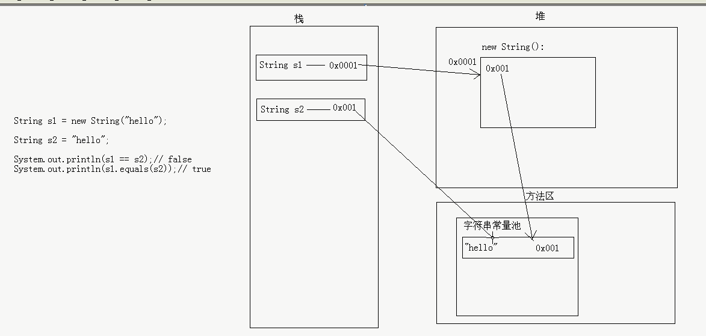

java常用类学习总结，参考教程Java基础视频-【深入浅出精华版视频】-刘意-经典27天完整版-黑马程序员
java之常用类
一、Object类
介绍
Object是类层次结构的根类，所有的类都直接或者间接的继承自Object类。
Object类的构造方法有一个，并且是无参构造
这其实就是理解当时我们说过，子类构造方法默认访问父类的构造是无参构造
常用方法
- toString()
返回对象的字符串表示，默认是由类的全路径+‘@’+哈希值的十六进制表示。一般子类会重写此方法，重写后，一般输出 - equals()
比较两个对象是否相同。默认情况下，比较的是地址值是否相同。
而比较地址值是没有意义的，所以，一般子类也会重写该方法。 - hashCode() 返回对象的哈希值。不是实际地址值，可以理解为地址值。可重写。
- getClass() 返回对象的字节码文件对象。
- finalize() 用于垃圾回收，可重写，因为垃圾回收的时间不确定，所以此方法调用的时间不确定。
- clone() 可以实现对象的克隆，包括成员变量的数据复制，但是它和两个引用指向同一个对象是有区别的。被clone的类要加上Cloneable接口
二、Scanner类
介绍
用于收集键盘录入的类。
构造方法
system.in
是标准的输入流，对应键盘输入
1 | public Scanner(InputStream source) |
常用方法
- public int nextInt()
- public String nextLine()
问题
同一个Scanner对象，先获取数值，再获取字符串会出现一个小问题。（输入数值会自动把\r\n截掉，后面获取的字符串是\r\n
解决方案：
- 重新定义一个Scanner对象
- 把所有的数据都用字符串获取，然后再进行相应的转换
三、String类
介绍
字符串是由多个字符组成的一串数据(字符序列)
字符串可以看成是字符数组
字符串一旦被赋值，就不能改变。
注意：这里指的是字符串的内容不能改变，而不是引用不能改变。
字面值作为字符串对象和通过构造方法创建对象的不同
String s = new String(“hello”);和String s = “hello”的区别?

构造方法
- public String() 空构造
- public String(byte[] bytes) 把字节数组转换为字符串
- public String(byte[] bytes,int offset,int length) 把字节数组的一部分转化为字符串
- public String(char[] value) 把字符数组转化为字符串
- public String(char[] value,int offset,int count) 把字符数组的一部分转化为字符串
- public String(String original) 把字符串常量转化为自渡船
常用方法
判断功能
- boolean equals(Object obj) 比较字符串内容是否相同，区分大小写
- boolean equalsIgnoreCase(String str) 比较字符串内容是否相同，不区分大小写
- boolean contains(String str) 判断大字符串中手否包括小字符串
- boolean startsWith(String str) 判断字符串是否以某个指定的字符串开头
- boolean endsWith(String str) 判断字符串是否以某个指定的字符串结尾
- boolean isEmpty() 判断字符串是否为空
获取功能
- int length() 获取字符串的长度
- char charAt(int index) 获取索引位置的字符
- int indexOf(int ch) 返回指定字符在此字符串中第一次出现的索引
- int indexOf(String str) 返回指定字符串在此字符串中第一次出现处的索引。
- int indexOf(int ch,int fromIndex) 返回指定字符在此字符串中从指定位置后第一次出现处的索引。
- int indexOf(String str,int fromIndex) 返回指定字符串在此字符串中从指定位置后第一次出现处的索引。
- String substring(int start) 从指定位置开始截取字符串,默认到末尾。
- String substring(int start,int end) 从指定位置开始到指定位置结束截取字符串。
转换功能
- byte[] getBytes() 把字符串转换为字节数组。
- char[] toCharArray() 把字符串转换为字符数组。
- static String valueOf(char[] chs) 把字符数组转成字符串。
- static String valueOf(int i) 把int类型的数据转成字符串。
- String toLowerCase() 把字符串转成小写。
- String toUpperCase() 把字符串转成大写。
- String concat(String str) 把字符串拼接。
其他功能
- 替换功能
String replace(char old,char new) 替换字符串中的字符 String replace(String old,String new) 替换字符串中的子字符串 - 去空格功能
String trim() 去掉字符串前后的空格 - 按字典比较功能
int compareTo(String str) int compareToIgnoreCase(String str) 不考虑大小写
四、StringBuffer类
介绍
线程安全，用字符串做拼接，比较耗时并且也耗内存，而这种拼接操作又是比较常见的，为了解决这个问题，Java就提供了一个字符串缓冲区类。StringBuffer供我们使用。
StringBuffer和String前者长度和内容可变，后者不可变。如果使用前者做字符串的拼接，不会浪费太多的资源。
StringBuffer：同步的，数据安全，效率低。
StringBuilder：不同步的，数据不安全，效率高。
构造方法
- StringBuffer() 构造一个其中不带字符的字符串缓冲区，其初始容量为 16 个字符。
- StringBuffer(int size) 构造一个不带字符，但具有指定初始容量的字符串缓冲区。
- StringBuffer(String str) 构造一个字符串缓冲区，并将其内容初始化为指定的字符串内容。
常用方法
添加功能
- public StringBuffer append(String str):可以把任意类型数据添加到字符串缓冲区里面,并返回字符串缓冲区本身
- public StringBuffer insert(int offset,String str):在指定位置把任意类型的数据插入到字符串缓冲区里面,并返回字符串缓冲区本身
删除功能
- public StringBuffer deleteCharAt(int index):删除指定位置的字符，并返回本身
- public StringBuffer delete(int start,int end):删除从指定位置开始指定位置结束的内容，并返回本身
替换功能
- public StringBuffer replace(int start,int end,String str):从start开始到end用str替换
反转功能
- public StringBuffer reverse()
截取功能
注意返回值类型不再是StringBuffer本身了
- public String substring(int start)
- public String substring(int start,int end)
五、Arrays工具类
介绍
是针对数组进行操作的工具类。包括排序和查找等功能。
常用方法
- public static String toString(int[] a) 把数组转成字符串
- public static void sort(int[] a) 排序
- public static int binarySearch(int[] a,int key) 二分查找，查找前必须先排序
六、Interger类
介绍
为了让基本类型的数据进行更多的操作，Java就为每种基本类型提供了对应的包装类类型
byte Byte
short Short
int Integer
long Long
float Float
double Double
char Character
boolean Boolean
构造方法
将字符串或int类型转化为Interger
- Integer i = new Integer(100);
- Integer i = new Integer(“100”);
常用方法
- public int intValue() Interger转int
- public String toString() Interger转String
- public static int parseInt(String s) String转int
- public static String toBinaryString(int i) int转二进制字符串
其他
自动装箱和自动拆箱
自动装箱：把基本类型转换为包装类类型
Integer ii = 100;
自动拆箱：把包装类类型转换为基本类型
ii += 200;
缓冲池
Integer的数据直接赋值，如果在-128到127之间，会直接从缓冲池里获取数据
七、Character类
Character 类在对象中包装一个基本类型 char 的值，此外，该类提供了几种方法，以确定字符的类别（小写字母，数字，等等），并将字符从大写转换成小写，反之亦然
构造方法
Character ch = new Character(‘a’);
常用方法
- public static boolean isUpperCase(char ch):判断给定的字符是否是大写字符
- public static boolean isLowerCase(char ch):判断给定的字符是否是小写字符
- public static boolean isDigit(char ch):判断给定的字符是否是数字字符
- public static char toUpperCase(char ch):把给定的字符转换为大写字符
- public static char toLowerCase(char ch):把给定的字符转换为小写字符
八、Math类
成员变量
- public static final double PI
- public static final double E
常用方法
- public static int abs(int a)：绝对值
- public static double ceil(double a):向上取整
- public static double floor(double a):向下取整
- public static int max(int a,int b):最大值 (min自学)
- public static double pow(double a,double b):a的b次幂
- public static double random():随机数 [0.0,1.0)
- public static int round(float a) 四舍五入(参数为double的自学)
public static double sqrt(double a):正平方根
九、System类
介绍
System类包含一些有用的类字段和方法。它不能被实例化。 在 System 类提供的设施中，有标准输入、标准输出和错误输出流；对外部定义的属性和环境变量的访问；加载文件和库的方法；还有快速复制数组的一部分的实用方法。
常用方法
public static void gc()：运行垃圾回收器。public static void exit(int status) 终止当前正在运行的 Java 虚拟机。参数用作状态码；根据惯例，非 0 的状态码表示异常终止。public static long currentTimeMillis() 返回以毫秒为单位的当前时间，统计程序运行时长public static void arraycopy(Object src,int srcPos,Object dest,int destPos,int length) 从指定源数组中复制一个数组，复制从指定的位置开始，到目标数组的指定位置结束。
十、BigInteger类
介绍
可以让超过Integer范围内的数据进行运算
构造方法
BigInteger(String val)
常用方法
- public BigInteger add(BigInteger val):加
- public BigInteger subtract(BigInteger val):减
- public BigInteger multiply(BigInteger val):乘
- public BigInteger divide(BigInteger val):除
- public BigInteger[] divideAndRemainder(BigInteger val):返回商和余数的数组
十一、BigDecimal类
介绍
浮点数据做运算，会丢失精度。所以，针对浮点数据的操作建议采用BigDecimal。(金融相关的项目)
构造方法
public BigDecimal(String val) 只建议参数为字符串
常用
- public BigDecimal add(BigDecimal augend) 加
- public BigDecimal subtract(BigDecimal subtrahend) 减
- public BigDecimal multiply(BigDecimal multiplicand) 乘
- public BigDecimal divide(BigDecimal divisor) 除
- public BigDecimal divide(BigDecimal divisor,int scale,int roundingMode):商，几位小数，如何舍取
十二、Date/DateFormat类
介绍
Date是日期类，可以精确到毫秒。
构造方法
Date():根据当前的默认毫秒值创建日期对象Date(long date)：根据给定的毫秒值创建日期对象
常用方法
- getTime() 从Date得到一个毫秒值
- setTime(long time) 把一个毫秒值转换为Date
十三、DateFormat/SimpleDateFormat类
介绍
DateFormat针对日期进行格式化和针对字符串进行解析的类，但是是抽象类，所以使用其子类SimpleDateFormat,可以自己写工具类
构造方法
SimpleDateFormat():默认模式
SimpleDateFormat(String pattern):给定的模式年 y月 M日 d时 H分 m秒 s
例如：
yyyy-MM-dd HH:mm:ss
常用方法
public final String format(Date date) Date转String（格式化）
public Date parse(String source) String转Date（格式化）
十四、Calendar类
介绍
日历类，封装了所有的日历字段值，通过统一的方法根据传入不同的日历字段可以获取值。
使用说明
本质返回的是子类对象
1 | Calendar rightNow = Calendar.getInstance(); // 子类对象 |
常用方法
- public void add(int field,int amount):根据给定的日历字段和对应的时间，来对当前的日历进行操作。
- public final void set(int year,int month,int date):设置当前日历的年月日